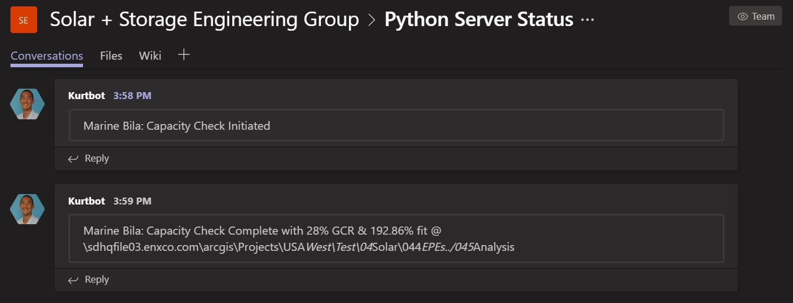

Kurtbot
Microsoft Teams Chatbot to Alert Teammates When Computation on Remote Server Completes

Anyone who writes Python programs for use by non-programmers has eventually run into the problem of packaging those python programs and virtual enviornments into a format that their audience can easily use and understand. In order to solve this problem at EDFR, I initially bundled python programs into EXE files via pyinstaller and cxfreeze. Solar Engineers would then interact with these EXE files via Excel VBA buttons. This solution works, but is slow due to connection lag between VBA and EXE. It also has the unfortunate consequence of locking down excel until the program finishes running, and the added difficulty of bundling the python script and virtual environment. This added difficulty quickly compounds as the virtual environment complexity increases.
A better solution to the aforementioned problem is to create a dedicated python server to run remote calculations and tasks. This server can be interacted with SCHTASKS commands embedded within bat files. Using bat files removes the complication of bundling the virtual environment and alleviates the locked down excel problem.
In order for the remote server to communicate with Solar Engineers without overloading their email inboxes, I created a Microsoft Teams chatbot which communicates the status of tasks requested of the remote python server. As our time uses Teams extensively, it was a simple and non-intrusive way of informing Solar Engineers that their task had finished.